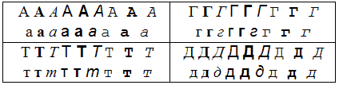
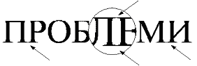
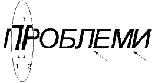
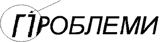
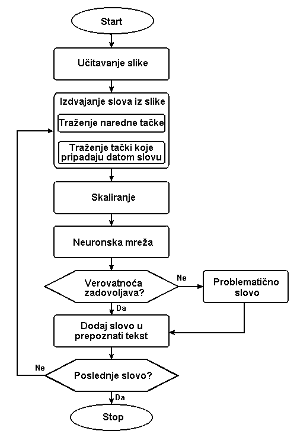

|
OCR V1.0 - Program za prepoznavanje cirilicnih slova
|
Autor: Velibor
Ilić
Kratak opis: U radu se govori o programu OCR za prepoznavanje ćiriličnih slova. Opisani su problemi koji se javljaju prilikom izrade softvera za prepoznavanje slova i predložena su neka od rešenja koja se mogu primeniti da bi se prevazišli postojeći problemi. Opisan je i postupak primene neuronskih mreža u prepoznavanju slova.
Ključne reči: OCR, ćirilična slova, prepoznavanje oblika, neuronske mreže, objektno orijentisano programiranje, Delphi
Abstract: This text describes OCR software for recognition Cyrillic letters. In this text is being discussed about problems that can be appearing during development OCR software and suggested is some solutions for those problems. Appliance neural networks
for recognition Cyrillic letters.
Key words: OCR, Cyrillic letters, pattern recognition, neural networks, object oriented programming, Delphi
Datum izrade: Februar, 2002
Download!!! OCR V1.1 (OCR.ZIP 356Kb)
https://www.dropbox.com/s/khaoep8ukteecuz/OCR.ZIP?dl=0
Uvod
Problemi prepoznavanja slova
OCR - softver za prepoznavanje teksta
Zaključak
Literatura
Problem prepoznavanja oblika je ljudima veoma blizak; sa njime se sreću tokom celog života, počevši od najranijeg detinjstva. Prepoznavanje oblika nije urođena osobina nego se stiče učenjem. Sposobnost prepoznavanja oblika ljudi razvijaju i usavršavaju gotovo celog svog života. Do nedavno su samo živi organizmi imali sposobnost prepoznavanja oblika. U poslednje vreme, zahvaljujući razvoju informacionih tehnologija i veštačke inteligencije, ostvareni su konkretni rezultati u oblasti prepoznavanja oblika. Pod pojmom teorije prepoznavanja oblika podrazumevamo matematičke metode, prvenstveno namenjene automatskom klasifikovanju (mašinskom) konkretnih objekata. Teorija prepoznavanja oblika oslanja se uglavnom na upotrebu metoda veštačke inteligencije kao što su: neuronske mreže, fuzzy logika, ekspertni sistemi, matematička logika, statističke metode, itd.
Problem prepoznavanja skeniranog teksta se može svesti na problem prepoznavanja slova koja su sastavni delovi teksta. Za metode prepoznavanja slova se na engleskom jeziku koristi termin Optical Character Recognition (OCR).
Problem prepoznavanja teksta spada u probleme za koje računari nisu najbolje prilagođeni. Težina problema je u teškoći da se definiše skup pravila pomoću kojih bi opisali mnoštvo varijacija slova. Jedno isto slovo se u nekom tekstu može pojaviti u više različitih veličina i u mnogo oblika (fontova).
Sa ovakvim varijacijama čovek lako izlazi na kraj, ali računari imaju ozbiljne poteškoće.
Slova se razlikuju prema:
- fontovima (Arial, Courier, Times New Roman, …)
- formatiranju (Normal, Italic, Bold, Bold italic)
- VELIKA SLOVA, mala slova
- veličini fonta u pikselima (veličina 8, veličina 14, veličina 20, …).
Problem prepoznavanja slova se može posmatrati kao problem klasifikacije skupa oblika (slova) na međusobno disjunktne klase. Svaki posmatrani objekat (oblik) karakteriše skup njegovih osobina na osnovu kojih se dati objekat razlikuje od ostalih. Za teoriju prepoznavanja oblika nisu interesantne sve osobine objekta, nego samo one osobine na osnovu kojih se dati objekat razlikuje od ostalih, tj. osobine po kojima se može klasifikovati.
Kada ne bi dolazilo do oštećenja slova prilikom štampanja i kasnije prilikom skeniranja, ovaj postupak bi se mogao rešiti topološki. Slova bi se prvo klasifikovala prema karakterističnim osobinama kao što su: broj preseka linija, broj zatvorenih linija, broj krajeva itd. Slova bi smo prvo svrstali u klase sličnih slova. Na primer, slova T i Y bi činila jednu klasu slova, K i X drugu, U i V, treću, A i R četvrtu i slično. U drugoj etapi bi se slova kvalitativno analizirala u okviru iste klasa. Ovaj koncept je teško primenljiv iz pomenutog razloga što prilikom štampanja i skeniranja dolazi do oštećenja slova. Prepoznavanje slova najčešće se vrši pomoću: neuronskih mreža, ekspertnih sistema ili Bajesovih metoda.
Princip prepoznavanja ćiriličnih slova je veoma sličan opštem problemu prepoznavanja slova. Razlog zbog čega se strani programi za prepoznavanje teksta ne mogu primeniti za prepoznavanje ćiriličnih slova je to što u skupu latiničnih slova ne postoje neka ćirilična slova.
Softver za prepoznavanje teksta
Softver za prepoznavanje teksta se koristi da bi se izbeglo prekucavanje teksta koji se nalazi na papirnim dokumentima radi kasnije obrade, korekcije ili memorisanja u elektronskom obliku. Na tržištu se može naći softver za prepoznavanje teksta kao što je Recognita Plus, TextBridge i OmniPage. Nedostatak ovih programa je u tome što su uglavnom namenjeni za prepoznavanje latiničnih slova.
Jedan od najpoznatijih i najrasprostranjenijih programa za prepoznavanje testa je program Recognita Plus. Recognita ima podršku za prepoznavanje YU latiničnih slova (ŠĆČĐŽ). Prepoznavanje teksta kod ovog programa se bazira na konturnoj analizi i dopunjena je bit-macthing-om (poređenje tekućeg karaktera sa unapred pripremljenim idealnim slovima).
Na našim prostorima je sredinom devedesetih, na Elektrotehničkom fakultetu u Beogradu (1996), razvijen softver pod imenom ICRA za prepoznavanje ćiriličnih slova. Samo prepoznavanje slova se vršilo pomoću teorije grafova, a problemi prepoznavanja oštećenih slova su rešavani primenom ekspertnih sistema, odnosno složenim stablom odlučivanja.
Prilikom prepoznavanja slova karakteristični su sledeći problemi:
- Slova različite veličine
- Ista slova različitog izgleda
- Problem spojenih slova
- Problem oštećenih slova
- Problem određivanja kraja reči
Slova različite veličine
U tekstu se često javljaju slova različite veličine. Na primer, naslovi su veći od ostalog teksta, a i sam tekst ne mora biti uvek iste veličine. Čovek bez problema može da čita slova različite veličine, dok je računaru neophodno da ulaz bude standardizovan tj. konstantne veličine, za koju je obučavana neuronska mreža. Problem različitih veličina slova se rešava skaliranjem izdvojenih slova.
Ista slova različitog izgleda
Zbog korišćenja različitih tipova slova (fontova), često se dešava da ista slova izgledaju drugačije. Kod nekih slova velika i mala slova izgledaju drugačije (A,a). Takođe kod nekih fontova mala slova ne izgledaju isto u svim fontovima (slika 1).

Slika 1 Ista slova različitog izgleda
Problem spojenih slova
Prvi korak u prepoznavanju teksta je izdvajanje pojedinačnih slova iz teksta. Ukoliko se slova dodiruju postoji problem kako razgraničiti gde se završava jedno, a gde počinje drugo slovo. Ovo se često dešava kod serifnih fontova kao što je na primer Times New Roman. Na slici 2 su označena spojena slova. Ponekad se ovaj problem može rešiti novim skeniranjem teksta u većoj rezoluciji.

Slika 2 Spojena slova
Ukošena slova takođe mogu predstavljati problem za izdvajanje pojedinačnih slova iz testa (slika 3).

Slika 3 Ukošena slova
Problem oštećenih slova
Ovaj problem se najčešće javlja pri skeniranju teksta štampanog na lošijim štampačima ili kucanim na pisaćoj mašini.
Na slici 4 je prikazano oštećeno slovo B. Oštećena slova se teže prepoznaju jer se razlikuju od idealnih modela slova. Algoritam za prepoznavanje mora biti fleksibilan da bi mogao da prepozna oštećena slova. Iz tog razloga se koriste neuronske mreže jer one poseduju sposobnost da prepoznaju oblike sa određenim stepenom oštećenja (šuma).
Slika 4 Delimično oštećeno slovo B
Mnogo veći problem predstavlja prekidanje slova na ključnom mestu, kao što je prikazano na slici 5. Velika je verovatnoća da će program za prepoznavanje teksta prekinuto slovo prepoznati kao dva znaka. Na slici 5. je prikazano prekinuto slovo P.

Slika 5 Prekinuto slovo P
Problem određivanja kraja reči
Prilikom prepoznavanja slova se javlja problem razdvajanja reči. Kako odrediti gde je početak, a gde kraj jedne reči. Reči se odvajaju tako što se između njih nalazi prazan znak. Razmak između slova može biti različite dužine što stvara problem. Takođe postoje proporcijalni i neproporcijalni fontovi kod kojih je rastojanje između slova različito.
Problemi
Slika 6 Proporcionalni font
Problemi
Slika 7 Neproporcionalni font
Na slici 7, u slučaju neproporcionalnog fonta,
se vidi da je rastojanje između slova l i e veće nego kod proporcionalnog
fonta (slika 6).
Stanjivanje slova
Stanjivanje se sastoji u uklanjanju suvišnih piksela, a da pri tome slovo zadrži prepoznatljiv oblik. U nekim radovima se pominje da se slova uspešnije prepoznaju ukoliko se ivice slova stanje na debljinu od jednog piksela. Teoretski, stanjivanje slova bi trebalo da smanji potreban broj primera za obučavanje mreže.

Slika 8 Slovo pre i posle stanjivanja
Prilikom stanjivanja slova dolazi do gubitka informacija i to je naročito problematično kod oštećenih slova ili kod nejasnih slova. Na taj način bi se kod nejasnih slova nejasnoća još više povećala.
Na slici 8 se vidi slovo pre i posle procedure stanjivanja. U praksi se, tokom testiranja programa “OCR”, pokazalo da se prilikom stanjivanja gubi deo informacija, pa bi slovo nakon procedure stanjivanja postalo prilično nečitljivo. Iz navedenih razloga se kod ovog softvera odustalo od primene procedure stanjivanja.
Algoritam softvera OCR za prepoznavanje teksta
U daljem tekstu je opisan algoritam po kome radi “OCR” program za prepoznavanje teksta.
Učitavanje slike predstavlja prvi korak u algoritmu prepoznavanja. Sa diska se učitava unapred pripremljena slika u bitmap formatu.

Slika 9 Algoritam za prepoznavanje slova
Izdvajanje slova iz slike – da bi mogli da prepoznamo slovo, moramo ga izdvojiti od ostatka slike. Slova se izdvajaju jedno po jedno, odgovarajućim redosledom (sleva na desno i od gore prema dole), na isti način kao što to čini čovek koji čita tekst. Izdvajanje slova iz slike je podeljeno u dve operacije.
Traženje jedne od tačka narednog slova. Ova procedura analizira sliku i pronalazi koordinate tačke koja pripada sledećem slovu. Prilikom startovanja programa pretraga se počinje od gornjeg levog ugla slike (0,0).
Određivanje najmanjeg pravougaonika u kome se nalazi kompletno slovo. Da bi smo mogli izdvojiti pojedinačna slova iz skenirane slike potrebno je utvrditi koje sve tačke pripadaju datom slovu. Kada se prethodnom procedurom dobiju koordinate jedne od tačaka koje pripadaju datom slovu, potrebno je odrediti najmanji pravougaonik koji obuhvata sve tačke datog slova.
U ovom programu se najmanji pravougaonik određuje metodom koncentričnih krugova. Oko nađene tačke se ispituju tačke koje okružuju nađenu tačku. Zatim se krugovi povećavaju dok se ne dobiju neobojene tačke sa sve četiri strane. Nedostatak ove metode je što ne može da razdvoji slepljena slova a problemi se mogu javiti i kod ukošenih slova, kao što prikazano na slici 2.
Skaliranje se vrši da bi program bio nezavisan od veličine slova. Skaliranjem se sva slova, bez obzira na veličinu, svode na matricu 12x12 kakva je korišćena prilikom obučavanja neuronske mreže.
Dovođenjem slova standardne veličine na ulaz neuronske mreže, na izlazu se dobija trideset realnih brojeva u intervalu [0,1] koji predstavljaju verovatnoću slova sa ulaza. Odabira se slovo sa najvećom verovatnoćom. Ukoliko je slovo na ulazu korektno prepoznato, na izlazu bi trebalo da se pojavi niz od trideset brojeva; pri čemu bi jedan od izlaza imao vrednost jedan, dok bi ostali imali vrednost približno nula. Redni broj izlaza koji ima vrednost jedan predstavlja redni broj slova u azbuci. U programu “OCR” neuronsku mrežu možemo posmatrati kao crnu kutiju (nepoznatu složenu logičku funkciju).
U narednom koraku se ispituje da li je verovatnoća prepoznavanja slova veća od granice tolerancije. Ukoliko jeste, slovo se dodaje prepoznatim slovima, a ukoliko nije pojavljuje se ekran na kome se prikazuje problematično slovo i omogućava korisniku da pokuša da prepozna slovo i ručno upiše “problematično” slovo, koje se zatim pridružuje ostalim prepoznatim slovima.
Postupak se ponavlja sve dok se ne dođe do poslednjeg slova na slici.
Prvobitno je zamišljeno da se izdvojeno slovo posle skaliranja stanji (pre propuštanja kroz neuronsku mrežu), da ivice slova budu debljine od jednog piksela, ali se kasnije odustalo od primene procedure stanjivanja, jer se stanjivanjem gubi važan deo informacija koje je slovo nosilo pre stanjivanja slike (slika 8).
Konfiguracija neuronske mreže u programu za prepoznavanje ćiriličnih slova
Program za prepoznavanje ćiriličnih slova “OCR” koristi troslojnu neuronsku mrežu koja ima sledeću konfiguraciju:
- Troslojna neuronska mreža sa backpropagation algoritmom obučavanja
- Broj neurona na ulaznom sloju (broj ulaza): 12?12 = 144
- Broj neurona na srednjem sloju: 35
- Broj neurona na izlaznom sloju (broj izlaza): 30
- Broj primera kojima se mreža obučava: 1590 (30 slova u više varijanti)
Trening skup kojim je obučavana neuronska mreža sastojao se od 1590 slova. Za obučavanje ove mreže korišćeni su fontovi: Arial, Times New Roman i Courier New. Slova su pisana u oblicima normalno (Normal), ukošeno (Italic), i podebljano (Bold). Takođe su upotrebljene tri veličine fonta koje su zatim skaliranjem svedene na veličinu 12x12. Za sve tipove slova su korišćena velika i mala slova.
Vreme potrebno za obučavanje mreže iznosi 02:12:53 sati bez prekida na računaru Celeron 333. Da bi se mreža obučila, bilo je potrebno 667 iteracija. Maksimalna greška je iznosila 0.098874 a prosečna greška je iznosila 0.00573.
OCR – softver za prepoznavanje ćiriličnih slova
Program “OCR” je napisan u Borland Delphi 5 razvojnom okruženju.
Detaljnije...
Minimalna hardverska konfiguracija potrebna za upotrebu programa za prepoznavanja teksta predstavlja PC računar baziran na procesoru klase Intel Pentium 100 ili jačem, sa 16 ili više megabajta RAM memorije i hard disk od oko 5 MB slobodnog prostora (program za prepoznavanje teksta zauzima 1.5 MB prostora na hard disku, a ostali prostor je potreban za smeštanje slika koje se obrađuju).
Program zahteva da na računaru bude instaliran operativni sistem Microsoft Windows 95 ili noviji.
Korisnički interfejs vidimo na slici 10. Komandni tasteri u gornjem delu ekrana imaju sledeće funkcije:
- Load – učitava skeniranu bitmap sliku sa diska. Učitana slika se prikazuje u levoj polovini ekrana.
- Save – snima prepoznati tekst sa desne polovine dela prozora u fajl.
- Nađi – komanda kojom se pokreće prepoznavanje teksta.
- Crno bela – konvertuje sliku u crno belu verziju. Pokretanjem ove komande se eliminišu nijanse sive boje. Ova opcija omogućava preciznije prepoznavanje slova.
- Invert – komanda za invertovanje slike. Služi za dobijanje negativa slike.
- Reset – briše prepoznati tekst iz desne polovine ekrana i omogućava ponovno prepoznavanje. Ova opcija se koristi pre startovanja ponovnog prepoznavanja teksta nakon podešavanja osetljivosti na greške.
- About – informacije o programu.
- Opcije – odabiranjem ovog tastera pojavljuje se sa desne strane ekrana dodatni meni (slika 11.) koji omogućava dodatno podešavanje programa.
- Exit – napuštanje programa.

Slika 10 Korisnički Interfejs programa
Program dozvoljava promenu praga osetljivosti na greške prilikom prepoznavanja teksta. Inicijalna vrednost je 0.50, ali se osetljivost na greške može menjati u intervalu od 0.30 do 0.90. Ukoliko je vrednost ovog parametra veća, program će tačnije prepoznavati slova, ali će zato češće prijavljivati “problematična” slova.
Ukoliko program prilikom prepoznavanja teksta naiđe na slovo kod koga je verovatnoća slova manja od željene, prepoznavanje se zaustavlja i pojavljuje se dijalog na kome korisnik može ručno uneti “problematično” slovo. Program u gornjem desnom uglu prikazuje uvećanu sliku problematičnog slova i predlaže slovo sa najvećom verovatnoćom. Verovatnoću predloženog slova možemo videti u gornjem desnom uglu ekrana. Slovo koje program predloži veće je od ostalih slova koja se nalaze na prikazanim tasterima u levoj polovini ekrana. Ukoliko je program dobro pretpostavio slovo, dovoljno je pritisnuti dugme “Ok” i program će slovo ubaciti u prepoznati tekst, a zatim nastaviti sa prepoznavanjem. Ukoliko je program pogrešno prepoznao slovo, korisnik može pomoću miša da odabere to “problematično” slovo. Ako korisnik želi, može “problematično” slovo da memoriše i kasnije da pokrene program za obučavanje. Nakon obučavanja, mreža će uspešno prepoznavati i takva slova. U desnom delu ekrana, ispod slike se nalazi polje u kome se prikazuje poslednji red prepoznatog teksta da bi korisnik mogao lakše identifikovati slovo u zavisnosti od prethodnih slova.
Najčešći razlog zbog čega program zaustavlja prepoznavanje je ukoliko naiđe na spojena slova (slova koja nisu pravilno izdvojena sa slike). Takva “slova” program ne može da obradi pošto je predviđena obrada samo pojedinačnih slova.
Takva “slova” program lako uočava jer imaju malu verovatnoću. U tom slučaju je potrebno iz leve polovine prozora mišem odabrati oba slova koja su prikazana u gornjem desnom delu ekrana.
Prepoznati tekst možemo memorisati na disku odabiranjem opcije Snimi. Nakon odabiranja opcije Snimi, pojavljuje se dijalog u kojim se određuje ime fajla pod kojim želimo da tekst snimimo na disk.
Programi za prepoznavanje teksta su značajni iz razloga što postoji veliki broj tekstova (informacija, znanja) koji su zapisani na papiru (knjige, poslovni dokumenti, fakture, priznanice, računi, itd.). Prebacivanje ovih informacija u digitalni oblik zahteva veliki ljudski rad. Prebacivanjem informacija zapisanih na papiru u digitalni oblik, ostvaruju se brojne prednosti kao što su:
- lako pretraživanje podataka,
- lako umnožavanje,
- lako prenošenje,
- jednostavnu modifikaciju,
- uštedu prostora (na malom prostoru se mogu smestiti velike količine informacija),
- računske operacije nad podacima (ukoliko su u pitanju brojčane vrednosti).
Današnji programi za prepoznavanje teksta, iako imaju visoku tačnost prilikom prepoznavanja teksta (preko 99%), još uvek ne mogu da garantuju 100% sigurnost prilikom konvertovanja informacija. Kada se postigne veća sigurnost konvertovane informacije, programi za prepoznavanje teksta će naći brojne primene u privredi i svakodnevnom životu.
Program za prepoznavanje ćiriličnih slova “OCR” je izrađen u eksperimentalne svrhe tokom izrade magistarskog rada “Obučavanje neuronskih mreža za prepoznavanje ćiriličnih slova”. Ukoliko se pojavi interesovanje, ovaj softver bi se mogao preraditi u pravu komercijalnu aplikaciju ako bi se unapredili pojedini moduli programa i dodale nove funkcije. Program bi funkcionisao mnogo efikasnije kada bi se usavršio algoritam za izdvajanje slova iz slike. Ova verzija programa ne razlikuje velika i mala slova, što bi u komercijalnoj verziji trebalo ispraviti. Postojeći program bi se mogao veoma lako preraditi za prepoznavanje latiničnih slova ili nekih drugih specifičnih znakova/simbola. Program za prepoznavanje teksta bi se mogao poboljšati i integrisanim sistemom za ispravljanje nepravilnih reči (spell checker) i, eventualno, sistemom za gramatičku proveru reči u rečenici. I pored ovih navedenih nedostataka, realizovani program pokazuje dobre rezultate pri prepoznavanju teksta.
Demo verzija OCR softvera se može slobodno preuzeti sa Interneta na lokaciji:
Download!!!OCR V1.1 (OCR.ZIP 356Kb)
https://www.dropbox.com/s/khaoep8ukteecuz/OCR.ZIP?dl=0
[1] Ilić, V., (1999) “Obučavanje neuronskih mreža za prepoznavanje ćiriličnih slova”, magistarski rad, Tehnički Fakultet “Mihajlo Pupin”, Zrenjanin
[2] Ilić, V. (2000), “NeuroVCL components for Delphi”, NEUREL 2000, Zavod za grafičku obradu Tehnološko-metalurškog fakulteta, Beograd
[3] Ilić, V. (2000), “Force learn algorithm – training neural networks with patterns which have highest errors”, NEUREL 2000, Zavod za grafičku obradu Tehnološko-metalurškog fakulteta, Beograd
[4] Berberski, Ž., (1996).: “Šta sve mogu neuronske mreže?”, časopis “Računari” br 120, BIGZ, Beograd
[5] Bernander, O., (1998) “Neural Network”, Microsoft(R) Encarta(R) 98 Encyclopedia. (c) 1993-1997 Microsoft Corporation
[6] Hotomski, P., (1995): “Sistemi Veštačke inteligencije”, Tehnički fakultet “Mihajlo Pupin”, Zrenjanin
[7] Jocković, M., Ognjanović Z., Stankovski S. (1997) “Veštačka inteligencija inteligentne mašine i sistemi”, Grafomed, Beograd
[8] Milenković, S., (1997): “Veštačke neuronske mreže”, Zadužbina Andrejević, Beograd
[9] Nikić, B., (1990): “Primena teorije prepoznavanja oblika kod obrade otiska papilarnih linija prstiju”, magistarski rad, TF “Mihajlo Pupin”, Zrenjanin
[10] Nikolić, T., Opačić, M., (1995): “Veštačka inteligencija i neuronske mreže”, IBN Centar, Beograd
[11] Ristanović, D., (1994): “Čitanje… kako to teško zvuči”, časopis “Računari” br 103, BIGZ, Beograd
[12] Reisdorph, K., (1998): “Naučite Delphi za 21 dan”, Kompjuter biblioteka, Beograd
[13] Sajić, I., (1995): “Neuronske mreže”, časopis “Računari” br 108, BIGZ, Beograd
[14] Sajić, I., (1996): “Da li je PC naučio da čita”, časopis “Računari” br 119, BIGZ, Beograd
[15] Subašić, P., (1998): “Fazi logika i neuronske mreže”, Tehnička Knjiga, Beograd
[16] “Frequently asked questions about AI”, http://www.cs.cmu.edu/Web/Groups/AI/html/faqs/ai/ai_general/top.html
[17] “Neural Network Frequently asked questions”, ftp://ftp.sas.com/pub/neural/FAQ.html
|